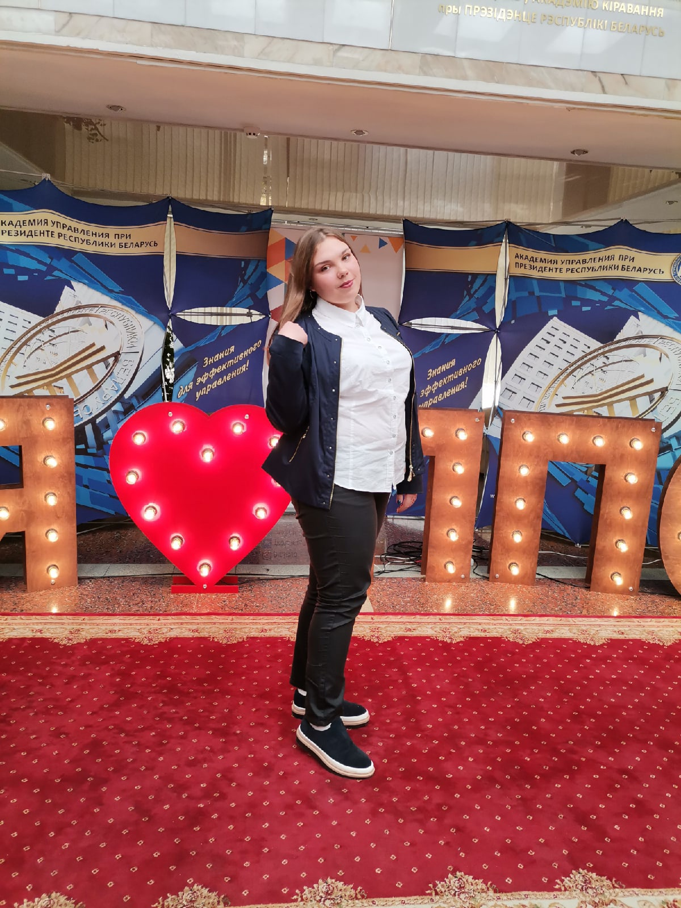
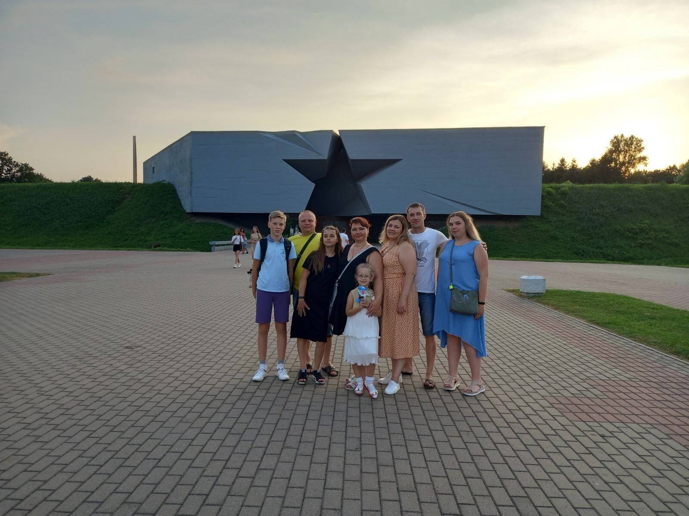
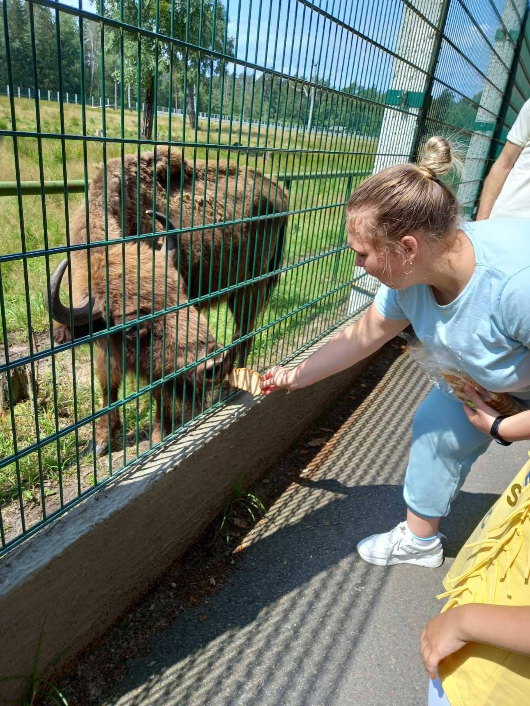
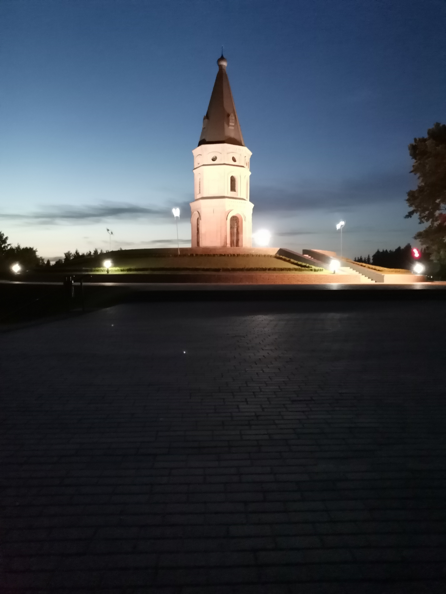
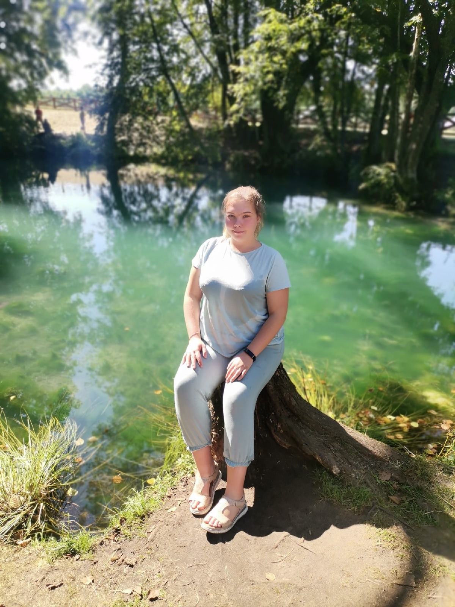
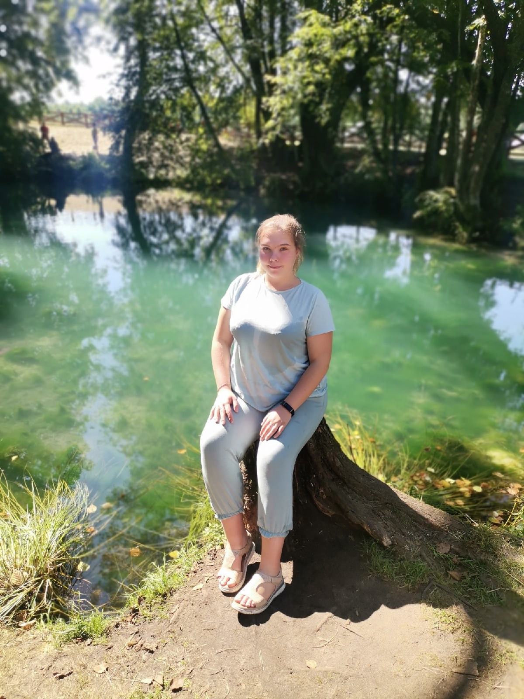
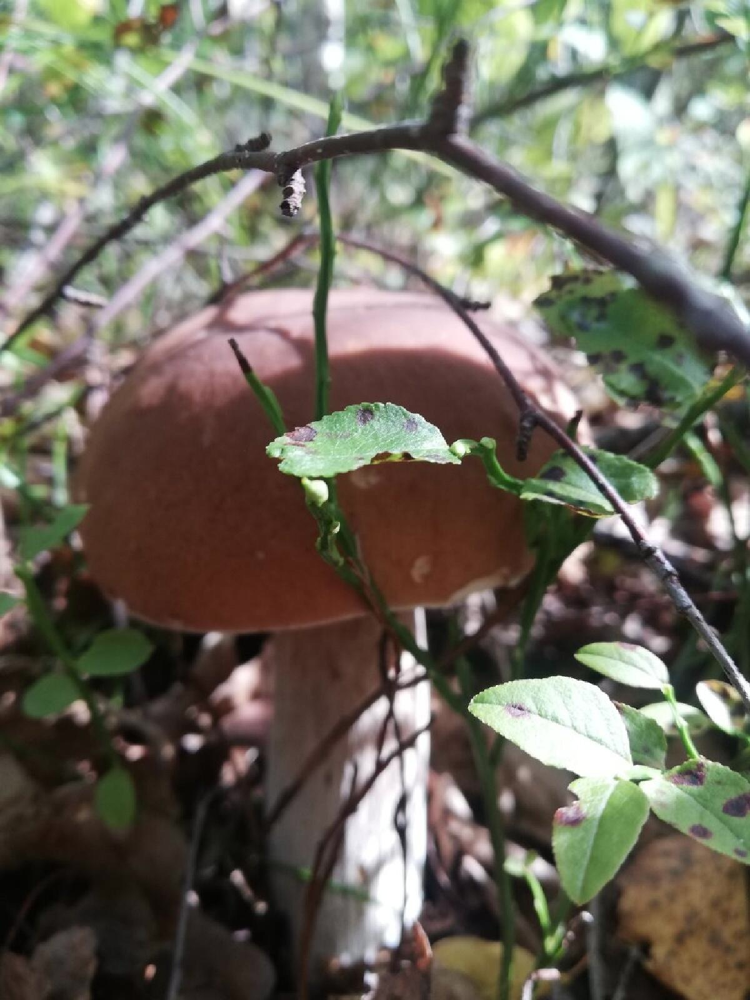

Мои каникулы
В июне месяце я была в Минске, так как у меня была сессия.
На выходных я ездила домой в Жлобин. А потом мы с родителями и сестрой ездили в Гомель. В Гомеле мы катались на каруселях, купались в Соже.
В июле мы с семьёй и друзьями побывали в Бресте. Там мы посетили мемориальный комплекс "Брестская крепость-герой".
Ещё мы были в музее "Форт №5". Форт № 5 – уникальный памятник русской фортификации конца XIX – начала XX веков. В 1995 г. включен в список историко-культурных ценностей Республики Беларусь. 31 мая 1999 г. стал филиалом мемориального комплекса «Брестская крепость-герой».
Также мы побыли в Беловежской пущи. Там мы катались на велосипедах, кормили животных, побыли в Резиденции Деда Мороза.

В августе я побывала в гостях у бабушки в Могилеве.
Источник «Голубая криница»
 

Грибы-2021
